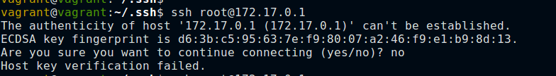
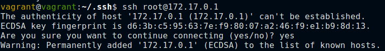

SSH: The Secure Shell
| SSH protocol | |
|---|---|
| Purpose | Secure remote shell, file transfer, port forwarding |
| Standard | RFC 4250–4256 |
| Runs atop | TCP/IP |
| Port number | 22 |
| Libraries | pexpect, pxssh, paramiko |
| Exceptions | socket.error, socket.gaierror, paramiko.SSHException |
SSH Overview
- SSH protocol is one of the best-known examples of a secure, encrypted protocol.
- SSH is descended from the ‘r’-family of protocols(rlogin, rsh, and rcp).
- SSH preserved all the great features of the early remote-shell protocol added wit hsecurity, encryption and efficient multiplexing.
Multiplexing
UDP and TCP use the concept of port numbers, let’s several different applications run on a machine over single IP. IP protocol has no clue about the different applications running at transport layer.
SSH is a sophisticated protocol that implements its own multiplexing. SSH has a notion of ‘channels’, mutliple channels can run on same SSH socket. Every block of information SSH sends across its socket is labeled with a “channel” identifier so that several conversations can share the socket.
Multiplexing makes sense because the real expense of an SSH connection is setting it up. It’s takes a few second of real time to setup an SSH connection. So using an SSH connection for as many operations justifies the high intitial expense of setting it up.
Once connected on SSH, you can create several kinds of channels:
- An interactive shell session, like that supported by Telnet.
- An interactive shell session, like that supported by Telnet.
- The individual execution of a single command.
- A file transfer session letting you browse the remote filesystem.
- A port forward that intercepts TCP connections.
SSH connection
Before automating SSH connections, we’ll take a brief look at how SSH conections are established. We’ll not delve into SSH protocol internals, we’ll only look at the connection flow.
SSH Host keys
-
When an SSH client first connects to a remote host, the two exchange temporary public keys that let them encrypt the rest of their conversation without revealing any information to any watching third parties.
-
Then, before the client is willing to divulge any further information, it demands proof of the remote server’s identity. This is to make sure that you don’t reveal username or password an attacker who got hold of server’s address.
Server identity
-
One way to deal with identifying machines on the Internet is to deploy your own Public Key Infrastructure(PKI) but using public-key infrastructure would be quite a cumbersome process for something like SSH.
-
An SSH server, when installed, creates its own random public-private key pair that is not signed by anybody. Key distribution can happen on of the two following ways:
- A system admin writes a script that gathers up all the host public keys in an organization, creates an ssh_known_hosts listing them all, and places this file in the /etc/sshd directory on every system in the organization. Once this done, every SSH client will know about every SSH host key before they even connect for the first time.
- Another approach is that, rather than knowing the host keys before hand, SSH clients will save host keys at the moment of first connection. You actually have no guarantee on this first encounter that you are really talking to the host you think it is. Nevertheless, at least you will be guaranteed that every subsequent connection you ever make to that machine is going to the right place.
When you encounter new unfamiliar host, you’ll get a message stating authenticity of the host cannot be established and it’s left to the user to decide.


paramiko
- SSH can be automated by various libraries in Python such as pexpect, pxssh(extra classes/methods around pexpect to deal with SSH), paramiko, fabric etc.
- paramiko is a Python third party library that has extensive support for normal SSH operations and it is very trivial to use.
- paramiko is has been ported to java, and is called jaramiko.
paramiko - host key operations
- paramiko, by default, doesn’t load any host key files, so it mandatorily raises an exception for the first host to which you connect because it will not be able to verify its key.
>>> import paramiko
>>> client = paramiko.SSHClient()
>>> client.connect('example.com', username='tester')
Traceback (most recent call last):
...
paramiko.ssh_exception.SSHException: Server 'example.com' not found in known_hosts
- You can load system and the current user’s known host keys before making connection so that paramiko is aware of them.
client.load_system_host_keys()
client.load_host_keys('/home/brandon/.ssh/known_hosts')
client.connect('example.com', username='test')
-
paramiko library also lets you choose how you handle unknown hosts.
-
Inside paramiko there are also several decision-making classes that already implement several basic host key options.
• paramiko.AutoAddPolicy: Host keys are automatically added to your user host key store (the file ~/.ssh/known_hosts on Unix systems) when first encountered, but any change in the host key from then on will raise a fatal exception.
• paramiko.RejectPolicy: Connecting to hosts with unknown keys simply raises an exception.
• paramiko.WarningPolicy: An unknown host causes a warning to be logged, but the connection is allowed to proceed.
SSH Authentication
• You can provide a username and password.
• You can provide a username and then have your client successfully perform a public-key challenge-response. This clever operation manages to prove that you are in possession of a secret “identity” key without actually exposing its contents to the remote system.
- password authentication
>>> client.connect('example.com', username='brandon', password=mypass)
- Public-key authentication where you use ssh-keygen to create an “identity” key pair (which is typically stored in your ~/.ssh directory) that can be used to authenticate you without a password makes the Python code even easier!
>>> client.connect('my.example.com')
If your identity key file is stored somewhere other than in the normal ~/.ssh/id_rsa file.
>>> client.connect('my.example.com', key_filename='/home/brandon/.ssh/id_sysadmin')
Running commands
import paramiko, sys, getpass
hostname = sys.argv[1]
username = sys.argv[2]
password = getpass.getpass()
client = paramiko.SSHClient()
client.set_missing_host_key_policy(paramiko.AutoAddPolicy)
client.connect(hostname, username=username, password=password)
for command in 'echo "Hello, world!"', 'uname', 'uptime':
stdin, stdout, stderr = client.exec_command(command)
stdin.close()
print(repr(stdout.read()))
stdout.close()
stderr.close()
client.close